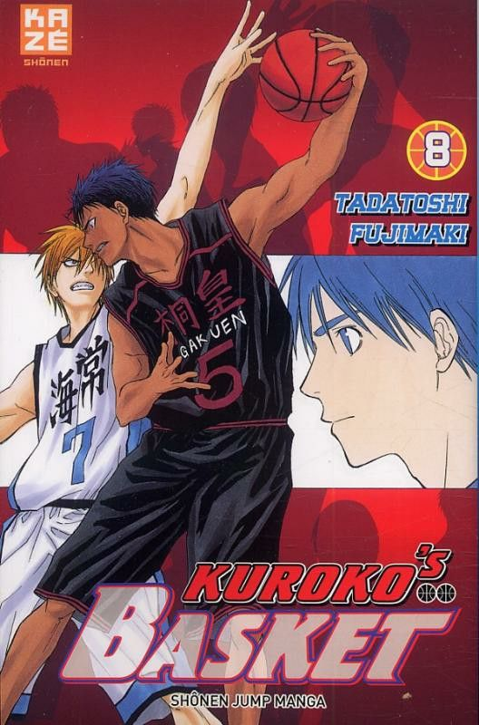

Баскетбол Куроко
О манге
«Баскетбол Куроко» (яп. 黒子のバスケ) — спортивная манга, созданная Тадатоси Фудзимаки. Публиковалась с декабря 2008 года по сентябрь 2014 года в журнале Weekly Shonen Jump издательства Shueisha, собрана в 30 томов. Аниме-адаптация от Production I.G транслировалась с апреля 2012 года. История рассказывает о Тэцуе Куроко, незаметном баскетболисте с уникальными навыками паса, и Тайге Кагами, талантливом новичке, которые вместе стремятся сделать команду школы Сэйрин чемпионом Японии.
Автор: Тадатоси Фудзимаки — мангака, известный своим динамичным стилем и любовью к спортивным сюжетам.
Дата выпуска: 8 декабря 2008 (манга), 7 апреля 2012 (аниме).
Ключевые персонажи

Тэцуя Куроко
Главный герой, «невидимый» игрок команды Сэйрин. Специалист по незаметным пасам, бывший член «Поколения чудес».
Тайга Кагами
Талантливый новичок Сэйрин, вернувшийся из США. Стремится превзойти «Поколение чудес».
Рёта Кисэ
Член «Поколения чудес», играет за Кайдзё. Может копировать движения других игроков.
Сейджуро Акаши
Капитан «Поколения чудес» и команды Ракузан. Обладает стратегическим умом и способностью «Императорский глаз».
Сюдзо Нидзимура
Бывший капитан команды Тэйко и член «Поколения чудес». Универсальный игрок, ушёл из баскетбола из-за болезни отца.
Дайки Аоминэ
Член «Поколения чудес», играет за Тоо. Мощный форвард, известный своей скоростью и непревзойдённым стилем игры.
Ацуси Мурасакибара
Член «Поколения чудес», играет за Ёсэн. Центровой с невероятной силой и ростом, доминирует под кольцом.
Мидорима Шинтаро
Член «Поколения чудес», играет за Шутоку. Атакующий защитник с невероятной техникой броска, способен забросить трехочковые с любой точки поля.